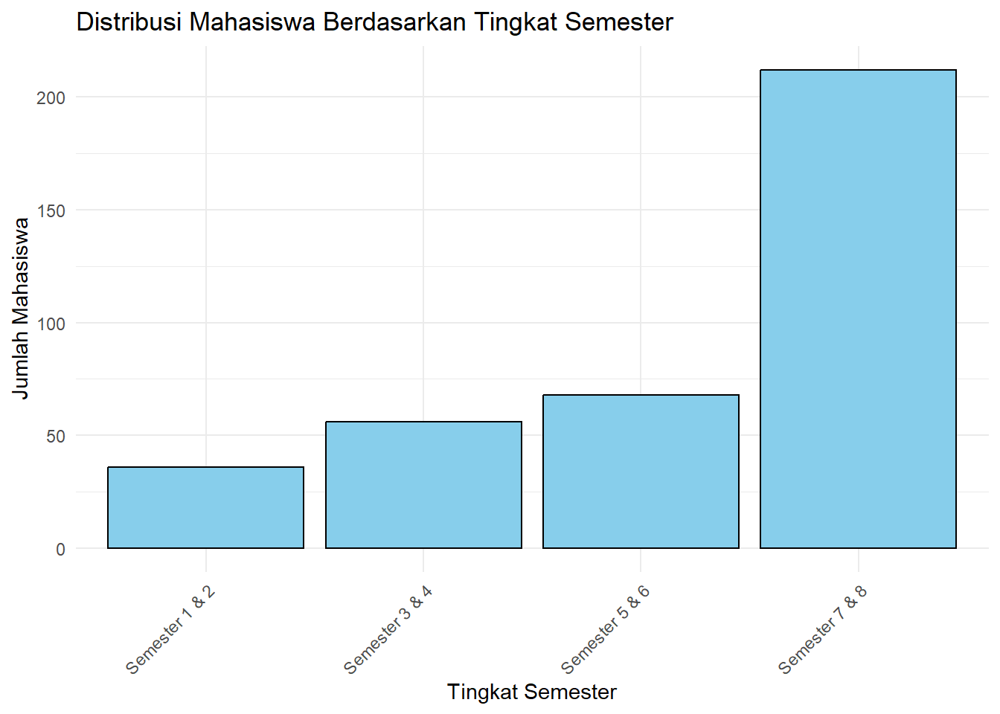
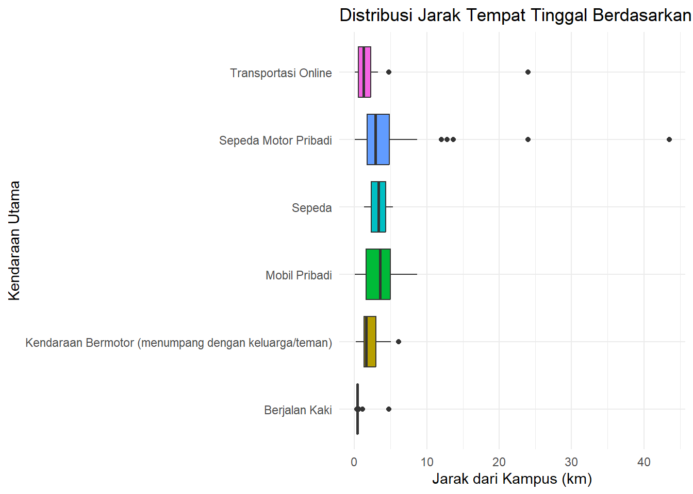

3 Modul-3: Visualisasi Data Kuantitatif
Setelah mempelajari modul ini, Anda diharapkan dapat:
- memilih visualiasi yang tepat sesuai dengan variabel yang akan disajikan dan informasi yang ingin disampaikan STP-3.1
- menginterpretasikan suatu visualiasi data kuantitatif secara mendalam STP-3.2
- menjelaskan pentingnya menentukan tingkat pengukuran untuk sebuah variabel dari kaitannya dengan analisis statistik deskriptif dan diagram yang dipilih untuk menyajikan informasi STP-3.4
- menghasilkan grafik yang tepat sesuai variabel yang akan disajikan STP-3.3
3.1 Visualisasi Data dengan ggplot2
ggplot2 adalah sebuah paket R yang dibuat oleh Hadley Wickham untuk membuat grafik dan visualisasi data. Paket ini didasarkan pada “Grammar of Graphics”, sebuah kerangka kerja yang memecah visualisasi menjadi komponen-komponen terpisah seperti data, sistem koordinat, dan elemen-elemen visual (geometries). Dengan pendekatan ini, Anda dapat membangun grafik lapis demi lapis (layer by layer).
ggplot23.1.1 Mengimpor Library & Mengatur Dataset
Pertama, kita perlu memuat paket tidyverse yang sudah mencakup ggplot2 untuk visualisasi dan dplyr serta readr untuk manipulasi data.
Tak lupa, kita juga akan menyertakan openxlsx dan gtsummary untuk mengolah data secara tabular jika sekiranya diperlukan dalam menunjang alur kerja kita.
Selanjutnya, kita akan mengimpor dataset kita, yakni hasil kuesioner kepada mahasiswa UBL., seperti halnya praktikum-praktikum sebelumnya.
# Mengeset variabel tersendiri untuk nama file nama sheet}
file.dibaca <- "datasets/Data Praktikum 03.xlsx"
sheet.ubl <- "DataUtama_mhsUBL"
# Mengimpor file menjadi dataset memanfaatkan variabel nama file dan nama sheet yang kita buat tadi
data.ubl <- read.xlsx(file.dibaca, sheet = sheet.ubl)
# Pengenalan fungsi baru: 'mengintip' sejumlah baris pertama dari dataset kita
head(data.ubl)## Timestamp Kampus_PT Nomor.urut Jenis.Kelamin Umur Fakultas Prodi Tingkat.Semester
## 1 45413.83 UBL 1 Perempuan 21 Fakultas Ilmu Sosial dan Politik Ilmu Komunikasi 4 (Semester 7 - Semester 8)
## 2 45413.83 UBL 2 Laki-Laki 20 Fakultas Hukum Ilmu Hukum 3 (Semester 5 - Semester 6)
## 3 45413.85 UBL 3 Laki-Laki 21 Fakultas Ekonomi dan Bisnis Manajemen 4 (Semester 7 - Semester 8)
## 4 45413.85 UBL 4 Laki-Laki 22 Fakultas Ekonomi dan Bisnis Akuntansi 4 (Semester 7 - Semester 8)
## 5 45413.88 UBL 5 Laki-Laki 21 Fakultas Ekonomi dan Bisnis Manajemen 4 (Semester 7 - Semester 8)
## 6 45413.92 UBL 6 Perempuan 21 Fakultas Ekonomi dan Bisnis Akuntansi 4 (Semester 7 - Semester 8)
## Uang.Saku kepemilikan.mobil kepemilikan.motor kepemilikan.sepeda kendaraan.utama
## 1 < 1 jt 1 2 1 Sepeda Motor Pribadi
## 2 1 jt – 2 jt 2 1 1 Mobil Pribadi
## 3 1 jt – 2 jt 1 2 2 Sepeda Motor Pribadi
## 4 1 jt – 2 jt 1 4 1 Kendaraan Bermotor (menumpang dengan keluarga/teman)
## 5 2,1 jt – 3 jt 4 4 1 Mobil Pribadi
## 6 1 jt – 2 jt 1 2 1 Transportasi Online
## kelurahan jenis.tempat.tinggal nama.jalan.tempat.tinggal jarak.(km)
## 1 Kalibalau Kencana Rumah pribadi/rumah keluarga eLBe Loundry 4.223797
## 2 Gunung sulah Rumah pribadi/rumah keluarga Jl.Urip Sumoharjo no 88 2.703331
## 3 langkapura Rumah pribadi/rumah keluarga JL DARUSSALAM GG LANGGAR LK II 3.237072
## 4 Bilabong JAYA JAYA JAYA Rumah pribadi/rumah keluarga Jl Darussalam bilabong bila bolong di jait dong 3.002336
## 5 sukarame Rumah pribadi/rumah keluarga jl.cendrawasih sukarame bandar lampung 5.961925
## 6 Way halim Rumah pribadi/rumah keluarga Jl P tabuan nomor 26 2.925331
## alasan.pemilihan.lokasi.tempat.tinggal biaya.dalam.seminggu Jumlah.perjalanan.Senin Jumlah.Perjalanan.Selasa Jumlah.Perjalanan.Rabu
## 1 Bersama keluarga/saudara/teman 25 2 3 2
## 2 Mudahnya akses berpergian dari tempat tinggal 200 3 3 3
## 3 Bersama keluarga/saudara/teman 50 1 1 1
## 4 Lingkungan nyaman karna aman dari kejahatan 20 2 2 2
## 5 Dekat dengan fasilitas umum NA 1 1 1
## 6 Bersama keluarga/saudara/teman 40 3 3 1
## Jumlah.Perjalanan.Kamis Jumlah.Perjalanan.Jumat Jumlah.Perjalanan.Sabtu Jumlah.Perjalanan.Ahad
## 1 3 2 2 2
## 2 3 3 3 3
## 3 1 1 1 1
## 4 2 2 2 2
## 5 1 1 1 1
## 6 1 1 1 1Kemudian kita perlu menetapkan factor untuk variabel-variabel kategoris kita agar data kita lebih ‘bersih.’
# Menetapkan vektor untuk factor variabel kategoris
jk <- c("Laki-Laki", "Perempuan")
fakultas <- c("Fakultas Ekonomi dan Bisnis", "Fakultas Hukum",
"Fakultas Ilmu Komputer", "Fakultas Ilmu Sosial dan Politik",
"Fakultas Keguruan dan Ilmu Pendidikan", "Fakultas Teknik")
prodi <- c("Administrasi Bisnis", "Administrasi Publik","Akuntansi","Arsitektur",
"Ilmu Hukum","Ilmu Komunikasi", "Informatika","Manajemen",
"Pendidikan Bahasa Inggris", "Sistem Informasi")
tingkat <- c("1 (Semester 1 – Semester 2)",
"2 (Semester 3 – Semester 4)",
"3 (Semester 5 - Semester 6)",
"4 (Semester 7 - Semester 8)")
uang_saku <- c("< 1 jt", "1 jt – 2 jt", "2,1 jt – 3 jt", "3,1 jt – 4 jt", "> 4 jt")
# Merapikan dataset
data.ubl <- data.ubl |>
# mengubah nama variabel
rename(biaya.dalam.sepekan = biaya.dalam.seminggu) |>
rename(Jumlah.Perjalanan.Senin = Jumlah.perjalanan.Senin) |>
rename(jarak = `jarak.(km)`) |>
# menghapus data dengan missing values
drop_na() |>
# menambahkan factor ke variabel kategoris
mutate(Jenis.Kelamin = factor(Jenis.Kelamin, levels = jk),
Fakultas = factor(Fakultas, levels = fakultas),
Prodi = factor(Prodi, levels = prodi),
Tingkat.Semester = factor(Tingkat.Semester,
levels = tingkat,
ordered = TRUE),
Uang.Saku = factor(Uang.Saku, levels = uang_saku, ordered = TRUE))Kita akan mengubah kategori factor pada variabel Tingkat.Semester dan Uang.Saku agar lebih mudah dibaca saat divisualisasikan. Kita akan menggunakan fungsi dari dplyr (bagian dari tidyverse) untuk membersihkan dan mengubah data.
# Membersihkan dan mengubah nama level pada variabel Tingkat.Semester dan Uang.Saku
data.ubl.cleaned <- data.ubl %>%
mutate(
Tingkat.Semester = fct_recode(Tingkat.Semester,
"Semester 1 & 2" = "1 (Semester 1 – Semester 2)",
"Semester 3 & 4" = "2 (Semester 3 – Semester 4)",
"Semester 5 & 6" = "3 (Semester 5 - Semester 6)",
"Semester 7 & 8" = "4 (Semester 7 - Semester 8)",
"Di Atas Semester 8" = "5 (Di atas semester 8)"
),
Uang.Saku = fct_relevel(Uang.Saku,
"< 1 jt", "1 jt – 2 jt", "> 2 jt"
)
)## Warning: There were 2 warnings in `mutate()`.
## The first warning was:
## ℹ In argument: `Tingkat.Semester = fct_recode(...)`.
## Caused by warning:
## ! Unknown levels in `f`: 5 (Di atas semester 8)
## ℹ Run `dplyr::last_dplyr_warnings()` to see the 1 remaining warning.## Rows: 330
## Columns: 26
## $ Timestamp <dbl> 45413.83, 45413.83, 45413.85, 45413.85, 45413.92, 45413.93, 45413.93, 45413.93, 45413.94, 454…
## $ Kampus_PT <chr> "UBL", "UBL", "UBL", "UBL", "UBL", "UBL", "UBL", "UBL", "UBL", "UBL", "UBL", "UBL", "UBL", "U…
## $ Nomor.urut <dbl> 1, 2, 3, 4, 6, 7, 8, 9, 10, 12, 14, 15, 16, 17, 18, 19, 20, 21, 24, 25, 27, 30, 31, 32, 33, 3…
## $ Jenis.Kelamin <fct> Perempuan, Laki-Laki, Laki-Laki, Laki-Laki, Perempuan, Perempuan, Perempuan, Laki-Laki, Perem…
## $ Umur <dbl> 21, 20, 21, 22, 21, 22, 22, 22, 22, 22, 22, 19, 22, 23, 22, 23, 22, 20, 22, 18, 22, 20, 22, 2…
## $ Fakultas <fct> Fakultas Ilmu Sosial dan Politik, Fakultas Hukum, Fakultas Ekonomi dan Bisnis, Fakultas Ekono…
## $ Prodi <fct> Ilmu Komunikasi, Ilmu Hukum, Manajemen, Akuntansi, Akuntansi, Administrasi Publik, Administra…
## $ Tingkat.Semester <ord> Semester 7 & 8, Semester 5 & 6, Semester 7 & 8, Semester 7 & 8, Semester 7 & 8, Semester 7 & …
## $ Uang.Saku <ord> "< 1 jt", "1 jt – 2 jt", "1 jt – 2 jt", "1 jt – 2 jt", "1 jt – 2 jt", "1 jt – 2 jt", "< 1 jt"…
## $ kepemilikan.mobil <dbl> 1, 2, 1, 1, 1, 1, 1, 1, 1, 0, 1, 0, 0, 0, 0, 1, 1, 1, 0, 0, 0, 1, 2, 1, 2, 1, 3, 2, 2, 1, 0, …
## $ kepemilikan.motor <dbl> 2, 1, 2, 4, 2, 1, 1, 1, 1, 2, 1, 1, 1, 0, 1, 0, 2, 2, 0, 1, 1, 3, 2, 2, 2, 2, 2, 2, 3, 2, 1, …
## $ kepemilikan.sepeda <dbl> 1, 1, 2, 1, 1, 1, 1, 1, 1, 0, 0, 0, 0, 0, 0, 0, 0, 3, 0, 1, 0, 0, 0, 0, 0, 0, 0, 1, 1, 2, 0, …
## $ kendaraan.utama <chr> "Sepeda Motor Pribadi", "Mobil Pribadi", "Sepeda Motor Pribadi", "Kendaraan Bermotor (menumpa…
## $ kelurahan <chr> "Kalibalau Kencana", "Gunung sulah", "langkapura", "Bilabong JAYA JAYA JAYA", "Way halim", "S…
## $ jenis.tempat.tinggal <chr> "Rumah pribadi/rumah keluarga", "Rumah pribadi/rumah keluarga", "Rumah pribadi/rumah keluarga…
## $ nama.jalan.tempat.tinggal <chr> "eLBe Loundry", "Jl.Urip Sumoharjo no 88", "JL DARUSSALAM GG LANGGAR LK II", "Jl Darussalam b…
## $ jarak <dbl> 4.2237967, 2.7033310, 3.2370722, 3.0023362, 2.9253306, 2.0588294, 12.0078709, 4.7355783, 6.74…
## $ alasan.pemilihan.lokasi.tempat.tinggal <chr> "Bersama keluarga/saudara/teman", "Mudahnya akses berpergian dari tempat tinggal ", "Bersama …
## $ biaya.dalam.sepekan <dbl> 25, 200, 50, 20, 40, 70, 35, 50, 350, 50, 30, 35, 50, 200, 40, 100, 600, 50, 5, 50, 30, 500, …
## $ Jumlah.Perjalanan.Senin <dbl> 2, 3, 1, 2, 3, 2, 4, 4, 3, 2, 4, 2, 2, 2, 1, 1, 4, 4, 4, 2, 5, 4, 2, 3, 3, 3, 4, 2, 4, 1, 5, …
## $ Jumlah.Perjalanan.Selasa <dbl> 3, 3, 1, 2, 3, 2, 4, 4, 3, 1, 4, 1, 3, 3, 1, 1, 3, 1, 3, 4, 5, 3, 3, 3, 3, 4, 3, 4, 1, 1, 3, …
## $ Jumlah.Perjalanan.Rabu <dbl> 2, 3, 1, 2, 1, 2, 4, 4, 3, 2, 4, 3, 2, 4, 1, 1, 3, 1, 3, 3, 5, 3, 2, 3, 1, 3, 2, 3, 1, 1, 4, …
## $ Jumlah.Perjalanan.Kamis <dbl> 3, 3, 1, 2, 1, 2, 4, 4, 3, 1, 4, 3, 2, 2, 1, 1, 3, 1, 3, 3, 5, 3, 1, 2, 4, 2, 3, 1, 1, 1, 4, …
## $ Jumlah.Perjalanan.Jumat <dbl> 2, 3, 1, 2, 1, 2, 4, 3, 3, 2, 4, 3, 2, 3, 1, 1, 3, 1, 3, 3, 5, 3, 1, 1, 1, 3, 2, 5, 1, 1, 3, …
## $ Jumlah.Perjalanan.Sabtu <dbl> 2, 3, 1, 2, 1, 2, 3, 4, 2, 1, 1, 1, 2, 1, 1, 1, 3, 1, 3, 3, 3, 3, 1, 4, 3, 3, 2, 3, 2, 1, 3, …
## $ Jumlah.Perjalanan.Ahad <dbl> 2, 3, 1, 2, 1, 2, 3, 4, 1, 1, 1, 1, 1, 2, 1, 1, 3, 1, 3, 3, 3, 1, 1, 1, 1, 1, 1, 1, 1, 1, 3, …Sekarang kita siap memvisualkan data kita.
3.1.2 Tata Tulis Grafik (Grammar of Graphics)
Setiap grafik ggplot2 terdiri dari beberapa komponen kunci:
- DATA: Dataset yang ingin Anda visualisasikan.
- MAPPING:
aes()(aesthetics), yang menghubungkan variabel dari data Anda ke properti visual dari grafik (misalnya, sumbu x, sumbu y, warna, ukuran). - GEOM_FUNCTION: Objek geometris yang merepresentasikan data (misalnya,
geom_point()untuk scatter plot,geom_bar()untuk diagram batang). - STAT: Transformasi statistik. Setiap
geommemiliki statistik default (misalnya,geom_barsecara default menggunakanstat_count), tetapi Anda bisa menentukannya secara manual. - POSITION: Penyesuaian posisi untuk
geomyang tumpang tindih (misalnya,position_dodge()atauposition_stack()). - COORDINATE_FUNCTION: Sistem koordinat yang digunakan (
coord_cartesian,coord_flip, dll.). - FACET_FUNCTION: Membagi plot menjadi beberapa sub-plot berdasarkan variabel kategori (
facet_wrapataufacet_grid).
ggplot(<DATA>) +
<GEOM_FUNCTION>(mapping = aes(<MAPPING>),
stat = <STAT>,
position = <POSITION>) +
<COORDINATE_FUNCTION> +
<FACET_FUNCTION> +
<SCALE_FUNCTION> + # opsional
<THEME_FUNCTION> # opsional3.1.3 Praktik Visualisasi Data
3.1.3.1 Diagram Batang (Column/Bar Chart)
Diagram batang sangat baik untuk menampilkan distribusi atau perbandingan data kategoris.
3.1.3.1.1 Diagram Batang Tunggal
Mari kita lihat distribusi mahasiswa berdasarkan tingkat semester. geom_bar() secara otomatis menghitung jumlah observasi untuk setiap kategori di sumbu x.
diagram_batang <- ggplot(data.ubl.cleaned) +
geom_bar(mapping = aes(x = Tingkat.Semester), fill = "skyblue",
color = "black") +
labs(
title = "Distribusi Mahasiswa Berdasarkan Tingkat Semester",
x = "Tingkat Semester",
y = "Jumlah Mahasiswa"
) +
theme_minimal() +
theme(axis.text.x = element_text(angle = 45, hjust = 1)) # Rotasi label x agar tidak tumpang tindih
diagram_batang
Interpretasi: Grafik di atas menunjukkan bahwa mayoritas responden mahasiswa berasal dari tingkat semester 5 & 6, diikuti oleh semester 7 & 8.
Penjelasan Sintaks (Grammar of Graphics):
- DATA:
ggplot(data.ubl.cleaned)mendefinisikan dataset yang digunakan. - GEOM:
geom_bar(...)menentukan bentuk geometris yang digunakan, yaitu batang. - MAPPING:
mapping = aes(x = Tingkat.Semester)memetakan variabelTingkat.Semesterdari data ke sumbu x pada grafik. - STAT:
geom_bar()secara default menggunakanstat = "count", yang berarti ia secara otomatis melakukan transformasi statistik dengan menghitung jumlah baris untuk setiap kategoriTingkat.Semesterdan menampilkannya sebagai ketinggian batang di sumbu y. fill = "skyblue", color = "black": Ini adalah pengaturan properti visual, bukan pemetaan. Kita mengatur semua batang agar memiliki warna isian “skyblue” dan garis tepi “black”.labs(...),theme_minimal(),theme(...): Ini adalah lapisan tambahan untuk kustomisasi label dan tema, bukan bagian inti dari “grammar”.
3.1.3.1.2 Diagram Batang Bertumpuk (Stacked)
Kita bisa menambahkan variabel lain, misalnya Uang.Saku, ke dalam aes() dengan properti fill untuk membuat diagram batang bertumpuk. Ini menunjukkan proporsi uang saku di setiap tingkat semester.
diagram_batangTumpuk <- ggplot(data.ubl.cleaned) +
geom_bar(mapping = aes(x = Tingkat.Semester, fill = Uang.Saku)) +
labs(
title = "Distribusi Uang Saku per Tingkat Semester",
x = "Tingkat Semester",
y = "Jumlah Mahasiswa",
fill = "Uang Saku per Bulan"
) +
theme_minimal() +
theme(axis.text.x = element_text(angle = 45, hjust = 1))
diagram_batangTumpuk
Interpretasi: Dari grafik ini, kita bisa melihat komposisi uang saku di setiap angkatan. Misalnya, pada tingkat “Semester 5 & 6”, sebagian besar mahasiswa memiliki uang saku antara 1 juta hingga 2 juta. Hal ini kita ketahui dari perbandingan relatif tinggi porsi warna-warna dalam masing-masing batang.
Penjelasan Sintaks (Grammar of Graphics):
- MAPPING:
mapping = aes(x = Tingkat.Semester, fill = Uang.Saku)kini memiliki pemetaan tambahan. Selain sumbu x, kita juga memetakan variabelUang.Sakuke properti visualfill(warna isian).ggplotakan membuat segmen berwarna berbeda di dalam setiap batang sesuai kategori uang saku. - POSITION: Secara default,
geom_bar()menggunakanposition = "stack"ketikafilldipetakan ke sebuah variabel. Inilah yang menyebabkan segmen-segmen tersebut ditumpuk di atas satu sama lain. labs(fill = "Uang Saku per Bulan"): Argumenfilldi dalamlabs()berfungsi untuk mengubah judul dari legenda yang secara otomatis dibuat dari pemetaanfill.
Untuk membandingkan jumlah absolut antar kategori uang saku, diagram batang berkelompok lebih efektif. Kita gunakan position = "dodge".
diagram_batangSebar <- ggplot(data.ubl.cleaned) +
geom_bar(mapping = aes(x = Tingkat.Semester, fill = Uang.Saku),
position = "dodge") +
labs(
title = "Perbandingan Uang Saku per Tingkat Semester",
x = "Tingkat Semester",
y = "Jumlah Mahasiswa",
fill = "Uang Saku per Bulan"
) +
theme_minimal() +
theme(axis.text.x = element_text(angle = 45, hjust = 1))
diagram_batangSebar
Interpretasi: Grafik ini mempermudah perbandingan langsung. Terlihat jelas bahwa kategori uang saku “1 jt – 2 jt” mendominasi di hampir semua tingkat semester.
- POSITION: Komponen
positiondiubah secara eksplisit menjadiposition = "dodge". Ini menginstruksikanggplotuntuk menempatkan batang-batang yang memiliki kategori x yang sama (misalnya, “Semester 5 & 6”) bersebelahan, bukan menumpuknya. Ini memungkinkan perbandingan langsung antar kategoriUang.Saku.
Terkadang kita lebih tertarik pada perbandingan proporsi antar grup daripada jumlah absolutnya. Dengan mengubah position menjadi "fill", kita dapat membuat setiap batang memiliki tinggi yang sama (100%) dan menunjukkan persentase relatif dari setiap subgrup.
diagram_btTumpuk100 <- ggplot(data.ubl.cleaned) +
geom_bar(mapping = aes(x = Tingkat.Semester, fill = Uang.Saku),
position = "fill") +
scale_y_continuous(labels = scales::percent) + # untuk mengubah satuan sumbu Y menjadi '%'
labs(
title = "Proporsi Uang Saku per Tingkat Semester",
x = "Tingkat Semester",
y = "Persentase",
fill = "Uang Saku per Bulan"
) +
theme_minimal() +
theme(axis.text.x = element_text(angle = 45, hjust = 1))
diagram_btTumpuk100
Interpretasi: Grafik ini menunjukkan bahwa secara proporsional, mahasiswa dengan kategori uang saku tertinggi (“>4jt”) yang paling dominan terdapat pada tingkat 3 (“Semester 5 & 6”). Sementara itu, mahasiswa kategori uang saku terrendah paling banyak porsinya pada tingkat 2 (“Semester 3 & 4”). Ini adalah wawasan yang mungkin tidak terlihat jelas pada grafik jumlah absolut.
Penjelasan Sintaks (Grammar of Graphics):
POSITION: Komponen
positiondiubah menjadiposition = "fill". Pengaturan ini secara otomatis melakukan transformasi STAT yang berbeda: ia menghitung proporsi dari setiap subgrup (Uang.Saku) dalam setiap grup (Tingkat.Semester). Hasilnya adalah setiap batang dinormalisasi menjadi setinggi 1 (atau 100%).SCALE:
scale_y_continuous(labels = scales::percent)adalah lapisan tambahan yang mengontrol SKALA pada sumbu y. Fungsiscales::percentdigunakan untuk memformat label sumbu dari angka desimal (misal: 0.5) menjadi format persentase (misal: 50%) agar lebih mudah dibaca.
Aktivitas Mandiri 1: Membuat dan Menginterpretasikan Diagram Batang [STP-3.2, STP-3.3]
Buatlah diagram batang untuk variabel Fakultas:
- Diagram batang sederhana - gunakan
geom_bar() - Diagram batang bertumpuk dengan
Uang.Sakusebagai fill - Diagram batang berkelompok dengan
position = "dodge"dan interpretasikan hasilnya:- Fakultas mana yang paling banyak mahasiswa dengan uang saku >2jt?
- Bagaimana pola distribusi uang saku antar fakultas?
- Apakah ada fakultas yang dominan memiliki mahasiswa dengan uang saku tertentu?
3.1.4 Diagram Lollipop
Diagram lolipop adalah alternatif dari diagram batang yang dapat mengurangi tinta visual dan memberikan penekanan lebih pada nilai data. Grafik ini menggunakan segmen garis dan titik untuk merepresentasikan nilai. Ini sangat efektif untuk menampilkan data kategoris yang banyak kategorinya.
# Pertama, kita perlu membuat tabel baru yang menampilkan jumlah mahasiswa per program studi
prodi_count <- data.ubl.cleaned |>
count(Prodi, name = "jumlah") |>
arrange(jumlah) |>
mutate(Prodi = fct_inorder(Prodi)) # mengubah jadi faktor terurut# Kedua, kita baru bisa membuat diagram lollipop-nya
diagram_lollipop <- ggplot(prodi_count) +
# diagram lollipop terdiri atas 2 geometri: geom_segment yang bertindak sebagai
# batang dan geom_point yang bertindak sebagai permennya
geom_segment(
mapping = aes(x = Prodi,
y = 0, yend = jumlah),
color = "grey",
size = 1.5) +
geom_point(
mapping = aes(x = Prodi, y = jumlah),
color = "#0072B2", size = 4
) +
coord_flip() + # Membalik sumbu agar mudah dibaca
labs(
title = "Jumlah Responden Mahasiswa UBL Per Program Studi",
x = "Program Studi",
y = "Jumlah Responden"
) +
theme(
panel.grid.major.y = element_blank(),
panel.border = element_blank(),
axis.ticks.y = element_blank()
)
diagram_lollipop
Interpretasi: Grafik ini menunjukkan bahwa kebanyakan responden berasal dari program studi Ilmu Hukum dan Manajemen, dengan perbandingan yang cukup timpang dengan prodi-prodi lain. Selain itu, ternyata cukup dominan mahasiswa yang tidak memberikan data prodi mereka (NA) di antara prodi-prodi selain dua yang tertinggi tadi.
Penjelasan Sintaks (Grammar of Graphics):
- DATA & STAT: Sama seperti contoh sebelumnya, kita melakukan pra-pemrosesan data menggunakan
dplyr. Kita mengelompokkan data berdasarkanProdi, menghitung (count) jumlahnya, mengurutkan (arrange), dan yang terpenting, mengubahProdimenjadi variabel faktor yang terurut (fct_inorder) agar plot ditampilkan sesuai urutan yang kita inginkan. - GEOM & MAPPING (Layering): Di sinilah keunikan diagram lolipop. Kita menggunakan dua lapisan
geom:geom_segment(): Digunakan untuk membuat “batang” atau segmen garis. Mapping-nya membutuhkan empat estetika:xdanxend(yang sama untuk garis vertikal) sertay(titik awal, yaitu 0) danyend(titik akhir, yaitujumlah).geom_point(): Digunakan untuk membuat “permen” atau titik di ujung segmen. Mapping-nya lebih sederhana, hanya membutuhkanxdany.
- KOORDINAT:
coord_flip()digunakan untuk membalik sumbu, membuat diagram lolipop horizontal yang seringkali lebih mudah dibaca label kategorinya. - THEME: Lapisan tema digunakan untuk membersihkan tampilan, seperti menghilangkan beberapa garis grid dan batas panel untuk menonjolkan data itu sendiri.
3.1.5 Diagram Pai/Donat (Pie/Donut Chart)
Diagram pai (dan variasinya, diagram donat) digunakan untuk menunjukkan proporsi dari sebuah keseluruhan. Meskipun populer, diagram pai seringkali sulit untuk dibaca secara akurat, terutama ketika ada banyak irisan atau ukurannya mirip. Diagram donat sedikit lebih baik karena mengurangi penekanan pada sudut dan lebih fokus pada panjang busur.
Di ggplot2, diagram pai dibuat dengan memulai dari diagram batang bertumpuk, lalu mengubah sistem KOORDINAT-nya menjadi koordinat polar. Akan tetapi, dalam ggplot2 kita tidak bisa membuat diagram pai langsung dari datasetnya, tetapi kita harus membentuk tabel distribusi frekuensinya terlebih dahulu.
fakultas_count <- data.ubl.cleaned |>
count(Fakultas, name = "jumlah") |> # Membuat kolom jumlah responden per fakultas
mutate(
persen = jumlah / sum(jumlah) # Membuat kolom persentase dari 'jumlah
)
fakultas_count## Fakultas jumlah persen
## 1 Fakultas Ekonomi dan Bisnis 104 0.31515152
## 2 Fakultas Hukum 98 0.29696970
## 3 Fakultas Ilmu Komputer 29 0.08787879
## 4 Fakultas Ilmu Sosial dan Politik 52 0.15757576
## 5 Fakultas Keguruan dan Ilmu Pendidikan 6 0.01818182
## 6 Fakultas Teknik 41 0.12424242Baru kemudian kita bisa menghasilkan perintah ggplot untuk
diagram_pai <- ggplot(fakultas_count, aes(x = 2, y = persen, fill = Fakultas)) +
geom_bar(stat = "identity", color = "white") +
coord_polar(theta = "y", start = 0) +
labs(
title = "Sebaran Fakultas Responden Mahasiswa UBL",
fill = "Fakultas"
) +
# Membersihkan tema
theme_void() +
theme(legend.position = "right")
diagram_pai
Interpretasi: Diagram donat ini menunjukkan proporsi dari setiap fakultas. Terlihat jelas bahwa irisan “Fakultas Ekonomi dan Bisnis” dan “Fakultas Hukum” mendominasi porsi responden.
Penjelasan Sintaks (Grammar of Graphics):
- DATA & STAT: Kita menggunakan data
alasan_countsyang sudah diagregasi, lalu menambahkan kolom baru untuk persentase (persen) dan posisi vertikal untuk label (posisi_y_label). - GEOM & MAPPING: Kita mulai dengan
geom_bar(stat = "identity")yang membuat diagram batang di mana tinggi batang (y) adalah nilai persentase itu sendiri.x=2adalah trik untuk membuat satu batang tunggal yang akan kita “lilit”. - KOORDINAT:
coord_polar(theta = "y")adalah komponen kunci. Ini mengambil diagram batang dan mengubah sistem koordinatnya dari Kartesius (x,y) menjadi Polar. Sumbu y “dibengkokkan” menjadi sebuah lingkaran. theme_void(): Menghilangkan semua elemen tema seperti sumbu, label sumbu, dan latar belakang, yang tidak relevan untuk diagram pai/donat.- kita bisa menambahkan lubang di tengah pai dengan menambahkan
xlim(0.5, 2.5)yang merupakan batas dalam dan batas luar dari radius si diagram seperti berikut.

⚠️Penting
Komunitas perupa data pada dasarnya menganjurkan kita untuk ‘menghindari’ diagram lingkaran. Hal ini bisa kalian baca di laman ini. Alternatifnya, mereka lebih menyarankan kita untuk menggunakan diagram batang atau diagram lollipop saja
3.1.6 Diagram Treemap
Treemap adalah alternatif lain untuk diagram pai, terutama efektif ketika Anda memiliki banyak kategori. Treemap menampilkan data hierarkis atau bagian-ke-keseluruhan sebagai satu set persegi panjang bersarang. Ukuran setiap persegi panjang sebanding dengan nilainya.
Untuk membuat treemap, kita perlu paket tambahan yaitu treemapify.
# Pastikan paket sudah terinstall: install.packages("treemapify")
# install.packages("treemapify")
library(treemapify)Kita akan membuat treemap dari alasan mahasiswa memilih tempat tinggal mereka
# Pertama, kita siapkan data dengan menghitung jumlah dan mengurutkannya
alasan_counts <- data.ubl.cleaned |>
# Mengganti nama yang terlalu panjang agar muat di plot
mutate(alasan_singkat = fct_recode(`alasan.pemilihan.lokasi.tempat.tinggal`,
"Bersama Keluarga" = "Bersama keluarga/saudara/teman",
"Dekat Kampus/lokasi lain" = "Dekat dengan kampus",
"Dekat Kampus/lokasi lain" = "Dekat dengan fasilitas umum",
"Dekat Kampus/lokasi lain" = "Mudahnya akses berpergian dari tempat tinggal ",
"Fasilitas Lengkap" = "Fasilitas tempat tinggal lengkap",
"Murah" = "Biaya tempat tinggal murah",
"Aman" = "Lingkungan nyaman karna aman dari kejahatan"
)) |>
count(alasan_singkat, name = "jumlah")
alasan_counts## alasan_singkat jumlah
## 1 Bersama Keluarga 247
## 2 Murah 16
## 3 Dekat Kampus/lokasi lain 35
## 4 Fasilitas Lengkap 1
## 5 Lain-lain 2
## 6 Aman 29ggplot(alasan_counts, aes(area = jumlah, fill = alasan_singkat, label = alasan_singkat)) +
geom_treemap() +
geom_treemap_text(
colour = "white",
place = "centre",
size = 13
) +
labs(
title = "Proporsi Alasan Mahasiswa Memilih Tempat Tinggal (Treemap)",
fill = "Alasan utama"
) +
theme(legend.position = "bottom") # Untuk menampilkan area yang tidak ada labelnya
Penjelasan Sintaks (Grammar of Graphics):
- DATA: Kita menggunakan data
alasan_countsyang sudah diagregasi. - GEOM & MAPPING: Paket
treemapifymenyediakangeombaru yang terintegrasi denganggplot2.geom_treemap(): Ini adalahgeomutama. Alih-alihxdany, MAPPING utamanya adalahaes(area = jumlah).ggplotakan secara otomatis menghitung tata letak persegi panjang berdasarkan nilaijumlah. Kita juga memetakanalasan_singkatkefilluntuk warna danlabeluntuk teks.geom_treemap_text(): Ini adalahgeomtambahan khusus untuk menempatkan teks di dalam setiap area treemap.
- THEME: Kita bisa menyembunyikan legenda karena setiap area sudah diberi label secara langsung, sehingga legenda menjadi berlebihan. Caranya adalah mengatur nilai
bottom =menjadi"none". Akan tetapi, untuk kasus kita, kita punya area yang terlalu kecil untuk diberi label, sehingga kita tetap tampilkan legenda.
3.1.7 Histogram
Histogram digunakan untuk melihat distribusi dari variabel numerik/kontinu, seperti Umur.
histogram <- ggplot(data.ubl.cleaned) +
geom_histogram(mapping = aes(x = Umur), binwidth = 1, fill = "darkseagreen", color = "white") +
labs(
title = "Distribusi Umur Mahasiswa",
x = "Umur (Tahun)",
y = "Frekuensi"
) +
theme_minimal()
histogram
Penjelasan Sintaks (Grammar of Graphics):
- DATA:
ggplot(data.ubl.cleaned)mendefinisikan dataset. - GEOM:
geom_histogram(...)menentukan bentuk geometris berupa histogram. - MAPPING:
mapping = aes(x = Umur)memetakan variabel numerikUmurke sumbu x. - STAT:
geom_histogrammemilikistat = "bin"sebagai defaultnya. Transformasi statistik ini akan membagi dataUmurke dalam beberapa rentang (bins) yang lebarnya diatur olehbinwidth = 1, lalu menghitung frekuensi data di setiap rentang tersebut untuk ditampilkan di sumbu y.
3.1.8 Boxplot
Box plot berguna untuk membandingkan distribusi variabel numerik di antara beberapa grup/kategori. Mari kita bandingkan distribusi jarak tempat tinggal (jarak) untuk setiap jenis kendaraan utama.
boxplot <- ggplot(data.ubl.cleaned) +
geom_boxplot(mapping = aes(x = kendaraan.utama, y = jarak, fill = kendaraan.utama)) +
coord_flip() + # Membalik sumbu agar label mudah dibaca
labs(
title = "Distribusi Jarak Tempat Tinggal Berdasarkan Kendaraan Utama",
x = "Kendaraan Utama",
y = "Jarak dari Kampus (km)"
) +
theme_minimal() +
theme(legend.position = "none") # Menghilangkan legenda karena sudah ada di sumbu
boxplot
Interpretasi: Box plot ini menunjukkan bahwa mahasiswa yang menggunakan mobil pribadi cenderung memiliki rentang jarak tempat tinggal yang lebih bervariasi dan median yang sedikit lebih tinggi dibandingkan pengguna sepeda motor. Pengguna ojek online memiliki median jarak yang paling rendah di antara kategori lainnya.
Penjelasan Sintaks (Grammar of Graphics):
DATA:
ggplot(data.ubl.cleaned)mendefinisikan dataset.GEOM:
geom_boxplot(...)menentukan bentuk geometris berupa diagram kotak.MAPPING:
mapping = aes(x = kendaraan.utama, y = \jarak.(km)`, fill = kendaraan.utama)memetakan tiga hal: variabel kategorikendaraan.utamake sumbu x, variabel numerikjarak.(km)ke sumbu y, dankendaraan.utamake warna isianfill`.STAT:
geom_boxplotsecara default menggunakanstat_boxplot, yang menghitung ringkasan lima angka (minimum, Q1, median, Q3, maksimum) untuk setiap grup di sumbu x.KOORDINAT:
coord_flip()secara eksplisit mengubah sistem koordinat dengan membalik sumbu x dan y. Ini adalah komponen terpisah yang diterapkan setelah komponen lainnya.theme(legend.position = "none"): Kustomisasi lapisan tema untuk menyembunyikan legenda.
3.1.9 Grafik Pencar (Scatter Plot)
Scatter plot ideal untuk melihat hubungan antara dua variabel numerik. Mari kita lihat hubungan antara Umur dan jarak tempat tinggal.
scatter_plot <- ggplot(data.ubl.cleaned) +
geom_point(mapping = aes(x = Umur, y = jarak), alpha = 0.6, color = "darkblue") + # alpha untuk transparansi
labs(
title = "Hubungan Antara Umur dan Jarak Tempat Tinggal",
x = "Umur (Tahun)",
y = "Jarak dari Kampus (km)"
) +
theme_minimal()
scatter_plot
Interpretasi: Grafik ini tidak menunjukkan adanya pola atau hubungan yang jelas antara umur mahasiswa dan jarak tempat tinggal mereka dari kampus. Titik-titik tersebar secara acak.
Penjelasan Sintaks (Grammar of Graphics):
- DATA:
ggplot(data.ubl.cleaned)mendefinisikan dataset. - GEOM:
geom_point(...)menentukan bentuk geometris berupa titik. - MAPPING:
mapping = aes(x = Umur, y = \jarak.(km)`)memetakan dua variabel,Umurke sumbu x danjarak.(km)` ke sumbu y. Setiap baris data akan menjadi satu titik pada plot. alpha = 0.6dancolor = "darkblue"adalah pengaturan properti visual untuk semua titik.
Penting untuk menjaga konteks dalam interpretasi. Scatter plot kita menunjukkan bahwa mahasiswa yang lebih tua cenderung tinggal lebih jauh dari kampus. Namun, untuk benar-benar memahami kekuatan hubungan ini, kita perlu menggunakan statistik korelasi (akan dipelajari di modul selanjutnya).
Aktivitas Mandiri 2: Histogram dan Boxplot untuk Variabel Numerik [STP-3.2, STP-3.3]
Gunakan variabel jarak (jarak tempat tinggal dari kampus):
- Buat histogram dengan
binwidth = 2dan interpretasikan:- Apakah distribusi jarak simetris atau menceng (skewed)?
- Pada rentang jarak berapa frekuensi mahasiswa paling tinggi?
- Apakah ada pola tertentu dalam distribusi jarak?
- Buat boxplot yang membandingkan
jarakberdasarkanTingkat.Semesterdan interpretasikan:- Tingkat semester mana yang rata-rata (median) tinggal paling jauh dari kampus?
- Apakah ada outlier? Jika ada, pada tingkat semester mana?
- Bagaimana variabilitas jarak pada setiap tingkat semester?
Aktivitas Mandiri 3: Visualisasi Komprehensif untuk biaya.dalam.sepekan [STP-3.1, STP-3.2, STP-3.3, STP-3.4]
A. Menghasilkan Grafik [STP-3.3]:
- Buat histogram untuk
biaya.dalam.sepekan- Coba beberapa nilai
binwidth(misal: 20, 50, atau 100) dan pilih yang paling informatif - Tambahkan judul dan label sumbu yang jelas
- Coba beberapa nilai
- Buat boxplot untuk
biaya.dalam.sepekanberdasarkankendaraan.utama- Gunakan
geom_boxplot()denganfillberdasarkan kendaraan - Tambahkan label yang jelas
- Gunakan
- Buat scatter plot untuk
Umurvsbiaya.dalam.sepekan- Tambahkan
geom_point()denganalpha = 0.5untuk transparansi - Pertimbangkan menambahkan
geom_smooth(method = "lm")untuk melihat trend
- Tambahkan
B. Pemilihan Visualisasi dan Tingkat Pengukuran [STP-3.1, STP-3.4]:
- Mengapa histogram cocok untuk
biaya.dalam.sepekan?- Jelaskan kaitannya dengan tingkat pengukuran variabel (metrik/rasio)
- Informasi apa yang bisa diperoleh dari histogram? (distribusi, spread, outlier)
- Apakah scatter plot cocok untuk
Jenis.KelaminvsUmur? Mengapa tidak?- Jelaskan kaitannya dengan tingkat pengukuran variabel
- Diagram apa yang lebih sesuai untuk membandingkan umur berdasarkan jenis kelamin?
C. Interpretasi Mendalam [STP-3.2]:
- Dari histogram no.1:
- Berapa rentang biaya yang paling sering muncul (modus)?
- Apakah distribusinya simetris, menceng kanan, atau menceng kiri?
- Apakah ada outlier (nilai ekstrem)?
- Dari boxplot no.2:
- Kendaraan apa yang memiliki median biaya tertinggi?
- Kendaraan apa yang paling bervariasi biayanya (IQR terbesar)?
- Apakah ada outlier? Pada jenis kendaraan apa?
- Dari scatter plot no.3:
- Apakah ada pola hubungan antara umur dan biaya transportasi?
- Jika ada trend line, apakah slopenya positif atau negatif?
- Apa interpretasi kontekstualnya?
D. Dokumentasi [STP-3.3]:
- Kumpulkan file modul ini dengan:
- Seluruh kode diagram yang sudah Anda buat di modul ini
- Seluruh interpretasi dan analisis untuk setiap diagram
- Screenshot atau output grafik yang sudah dihasilkan